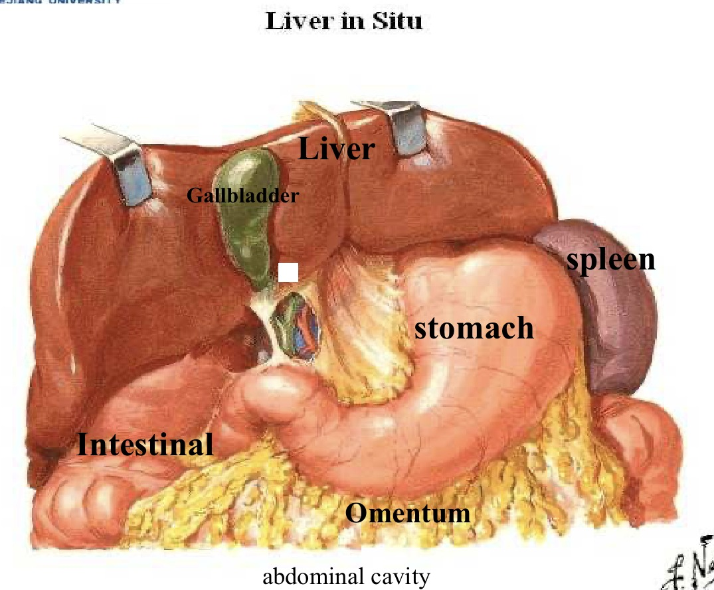
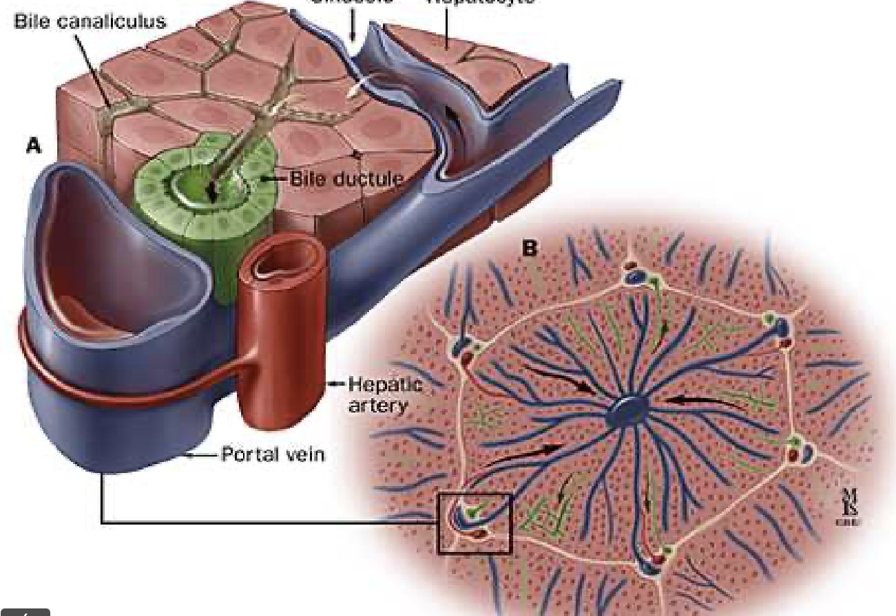
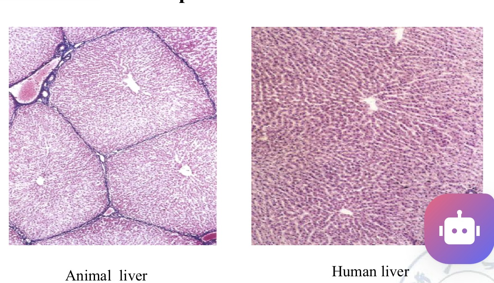
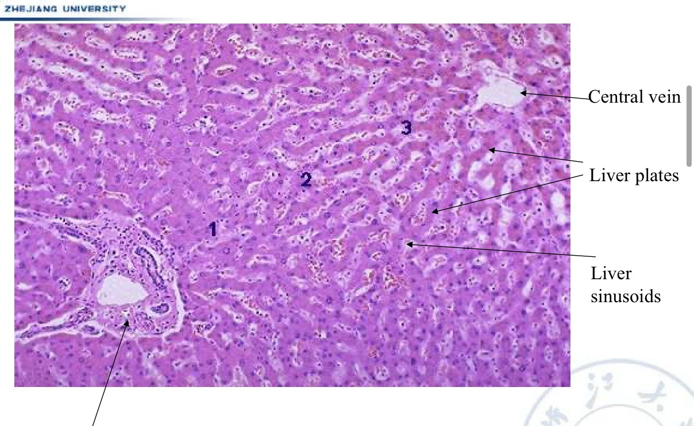
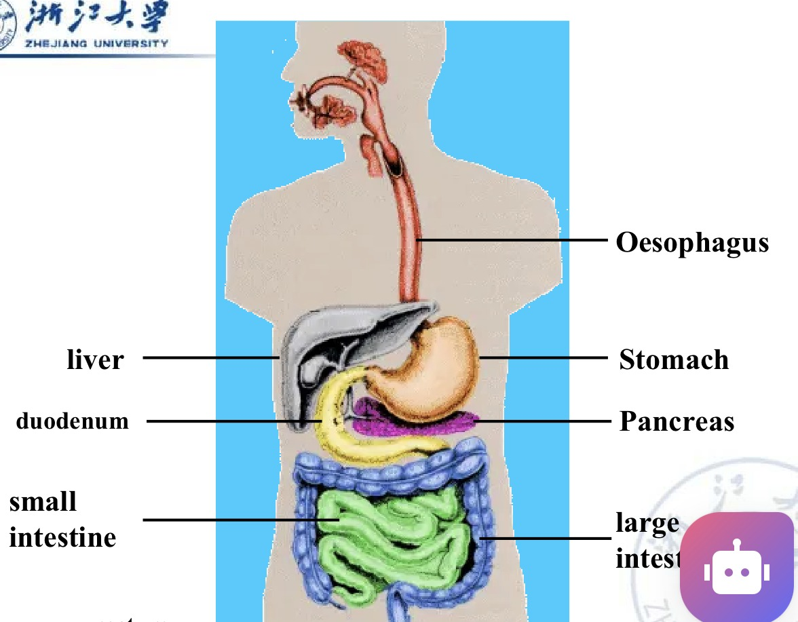
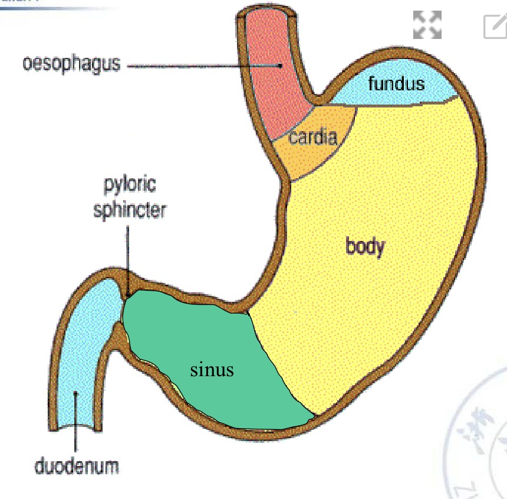
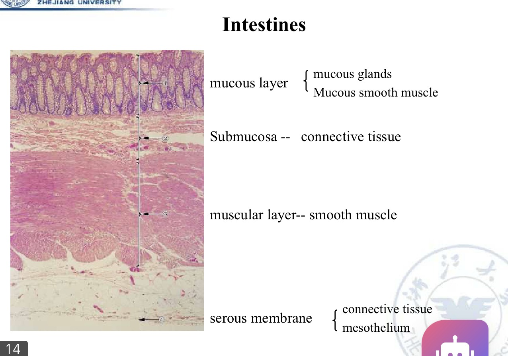
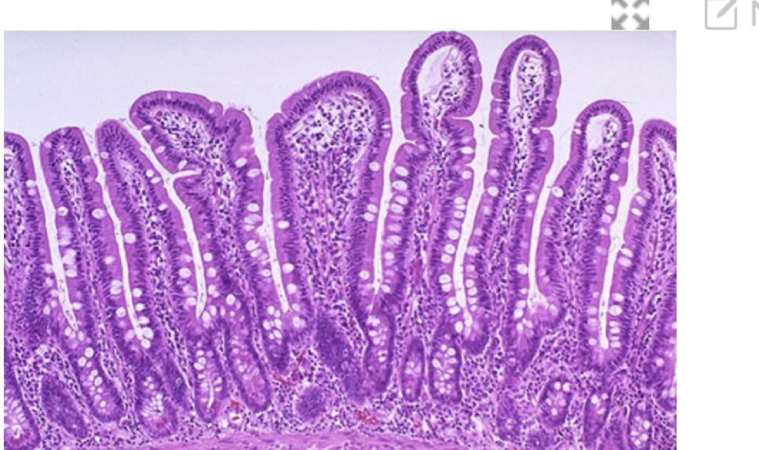

The Normal Baseline — Liver and Gutمبنای طبیعی — کبد و دستگاه گوارش
Almost every lesion in this session is in the liver, and the rest are read against it. A swollen hepatocyte, a fat-filled hepatocyte and a normal one differ by details you can only see if you already know what the normal cell looks like — so this Part comes first, and it belongs beside the microscope rather than in your memory.تقریباً هر ضایعهٔ این جلسه در کبد است و بقیه در مقایسه با آن خوانده میشوند. هپاتوسیت متورم، هپاتوسیت پر از چربی و هپاتوسیت طبیعی با جزئیاتی از هم فرق دارند که تنها در صورتی میبینیدشان که از پیش بدانید سلول طبیعی چه شکلی است — پس این بخش نخست میآید، و جایش کنار میکروسکوپ است نه در حافظه.
By the end of this Part you should be able toدر پایان این بخش باید بتوانید
State the normal weight, site, colour and functions of the liver.وزن، محل، رنگ و عملکردهای طبیعی کبد را بگویید.
Identify central vein, liver plates, sinusoids and portal space on a slide.ورید مرکزی، صفحات کبدی، سینوزوئیدها و فضای پورت را روی لام بشناسید.
Name the four layers of the digestive tube and what each contains.چهار لایهٔ لولهٔ گوارش و محتوای هر یک را نام ببرید.
1.1Liver — Grossکبد — ماکروسکوپی

Fig 1.1 The liver in situ, with the gallbladder beneath it and the stomach, spleen, intestine and omentum around it. Its relations matter for description: a liver specimen usually arrives with the gallbladder bed and porta hepatis visible, and those are your landmarks for orientation.کبد در جای خود، با کیسهٔ صفرا در زیر و معده، طحال، روده و امنتوم پیرامون آن. روابط آناتومیک برای توصیف مهماند: نمونهٔ کبد معمولاً با بستر کیسهٔ صفرا و ناف کبد قابلرؤیت میرسد و همینها نشانههای جهتیابی شمایند.
Table 1.1 Normal liver — the six wordsجدول ۱.۱ — کبد طبیعی، شش واژه
Featureویژگی
Normalطبیعی
Weightوزن
Male 1230–1446 g · Female 1100–1300 g — the heaviest internal organمرد ۱۲۳۰ تا ۱۴۴۶ گرم · زن ۱۱۰۰ تا ۱۳۰۰ گرم — سنگینترین عضو داخلی
Siteمحل
Abdominal cavity — right upper quadrant, under the diaphragmحفرهٔ شکم — ربع فوقانی راست، زیر دیافراگم
Colourرنگ
Red, and dull — not glistening. Both halves of that phrase matter: pallor and loss of lustre are the two colour changes you will meet in §3.1قرمز و کدر — نه براق. هر دو نیمهٔ این عبارت مهماند: رنگپریدگی و از دست رفتن جلا، دو تغییر رنگیاند که در بخش ۳.۱ خواهید دید
Shape and edgesشکل و لبهها
Wedge-shaped, with a sharp anterior edge. Remember this. A blunt, rounded edge is abnormal and appears in three of this session’s specimensگوهایشکل با لبهٔ قدامی تیز. این را به یاد بسپارید. لبهٔ کند و گرد غیرطبیعی است و در سه نمونهٔ این جلسه دیده میشود
Capsuleکپسول
Thin, smooth, not tense — Glisson’s capsuleنازک، صاف و غیرکشیده — کپسول گلیسون
Functionعملکرد
The biggest glandular organ — a “chemical plant”: metabolism, bile formation, detoxification, blood clotting, immunisation, calorigenesis, and regulation of water and electrolytesبزرگترین عضو غددی — یک «کارخانهٔ شیمیایی»: سوختوساز، ساخت صفرا، سمزدایی، انعقاد خون، ایمنی، تولید گرما و تنظیم آب و الکترولیت
High-Yield — why the liver is the organ of this sessionنکتهٔ کلیدی — چرا کبد عضو این جلسه است
Look at the function list again. The liver metabolises (so it is exposed to every toxin absorbed from the gut), it detoxifies (so it takes the hit), and it is the body’s main site of lipid handling (so it is where fat accumulates when handling fails). A “chemical plant” working on that scale is the first organ to show a metabolic insult — which is why three of this session’s seven gross specimens are liver.دوباره به فهرست عملکردها نگاه کنید. کبد سوختوساز میکند (پس در معرض هر سمی است که از روده جذب شود)، سمزدایی میکند (پس ضربه را میخورد) و محل اصلی مدیریت چربی بدن است (پس وقتی این مدیریت شکست بخورد، چربی همانجا انباشته میشود). «کارخانهای شیمیایی» در این مقیاس، نخستین عضوی است که آسیب متابولیک را نشان میدهد — و به همین دلیل سه نمونه از هفت نمونهٔ ماکروسکوپی این جلسه کبد است.
1.2Liver — Histologyکبد — بافتشناسی

Fig 1.2 The lobule in three dimensions. A: hepatocytes in plates, with a bile canaliculus between adjacent cells and a sinusoid running alongside. B: the hexagonal lobule — blood flows inwards from the portal triads to the central vein; bile flows outwards to the bile ductules. Two fluids, opposite directions, same plate.لوبول در سه بُعد. الف: هپاتوسیتها در صفحات، با کانالیکول صفراوی میان دو سلول مجاور و سینوزوئید در کنار. ب: لوبول ششضلعی — خون از مثلثهای پورت به درون بهسوی ورید مرکزی میرود؛ صفرا به بیرون بهسوی مجاری صفراوی. دو مایع، دو جهت مخالف، یک صفحه.

Fig 1.3 Animal liver (left) versus human liver (right) at low power. In the pig the lobules are outlined by obvious connective-tissue septa; in the human they are not. In a human slide you find the lobule by locating the central vein and the portal triads, not by looking for a boundary.کبد حیوانی (چپ) در برابر کبد انسانی (راست) در بزرگنمایی پایین. در خوک، لوبولها با سپتومهای همبندی آشکار مرزبندی شدهاند؛ در انسان چنین نیست. در لام انسانی، لوبول را با یافتن ورید مرکزی و مثلثهای پورت پیدا میکنید، نه با جستوجوی مرز.

Fig 1.4 Normal human liver, labelled. Central vein (top right), liver plates radiating from it, liver sinusoids between the plates, and the portal space at lower left containing the interlobular bile duct, vein and artery. Fix these four names now — every slide in Part 4 is described in terms of them.کبد طبیعی انسان، برچسبخورده. ورید مرکزی (بالا راست)، صفحات کبدی که از آن پرتو میزنند، سینوزوئیدهای کبدی میان صفحات، و فضای پورت در پایین چپ حاوی مجرای صفراوی، ورید و شریان بینلوبولی. همین حالا این چهار نام را تثبیت کنید — هر لام در بخش ۴ با همینها توصیف میشود.
Table 1.2 The four structures you must find on any liver slideجدول ۱.۲ — چهار ساختاری که باید در هر لام کبد بیابید
Structureساختار
What it looks likeچه شکلی است
What happens to it in this sessionدر این جلسه چه بر سرش میآید
Central veinورید مرکزی
A single thin-walled vessel with no companion artery or duct, at the centre of the lobuleرگی منفرد با دیوارهٔ نازک، بدون شریان یا مجرای همراه، در مرکز لوبول
Your landmark for zone 3 — the centrilobular zone, furthest from the blood supply and therefore the first to show fatty changeنشانهٔ شما برای ناحیهٔ ۳ — منطقهٔ مرکزلوبولی، دورترین از خونرسانی و بنابراین نخستین جایی که تغییر چربی نشان میدهد
Liver plates (cords)صفحات کبدی
One- to two-cell-thick rows of hepatocytes radiating from the central veinردیفهای یک تا دو سلولی از هپاتوسیتها که از ورید مرکزی پرتو میزنند
In swelling and in fatty change the plates thicken and lose their radial orderدر تورم و تغییر چربی، صفحات ضخیم و نظم شعاعیشان مختل میشود
Sinusoidsسینوزوئیدها
Wide, irregular capillaries between the plates, lined by endothelium and Kupffer cellsمویرگهای پهن و نامنظم میان صفحات، مفروش با اندوتلیوم و سلولهای کوپفر
Compressed and narrowed whenever hepatocytes enlarge. This is the single most reliable low-power sign of hepatocyte swellingهرگاه هپاتوسیتها بزرگ شوند، فشرده و باریک میشوند. این قابلاعتمادترین نشانهٔ تورم هپاتوسیت در بزرگنمایی پایین است
Portal space (triad)فضای پورت
A connective-tissue island containing three structures: interlobular bile duct, vein and arteryجزیرهای از بافت همبند حاوی سه ساختار: مجرای صفراوی، ورید و شریان بینلوبولی
Marks zone 1 — periportal, best oxygenated, last to be damaged by hypoxiaنشانگر ناحیهٔ ۱ — اطراف پورت، با بهترین اکسیژنرسانی، آخرین جایی که از هیپوکسی آسیب میبیند
Bench Technique — how to tell a central vein from a portal veinفن آزمایشگاه — تفکیک ورید مرکزی از ورید پورت
Count the companions. A central vein travels alone and hepatocyte plates run straight up to its wall. A portal vein sits in a patch of connective tissue with two companions — a bile duct (cuboidal epithelium, small round lumen) and an artery (thick muscular wall, small lumen). If you can see a duct, you are in a portal tract. Students who confuse the two describe centrilobular lesions as periportal and lose the zone, which in liver pathology is half the diagnosis.همراهان را بشمارید. ورید مرکزی تنها سفر میکند و صفحات هپاتوسیتی مستقیم تا دیوارهاش میآیند. ورید پورت در لکهای از بافت همبند با دو همراه مینشیند — مجرای صفراوی (اپیتلیوم مکعبی، مجرای گرد کوچک) و شریان (دیوارهٔ عضلانی ضخیم، مجرای تنگ). اگر مجرا میبینید، در فضای پورت هستید. دانشجویانی که این دو را خلط میکنند، ضایعهٔ مرکزلوبولی را اطرافپورتی توصیف میکنند و ناحیه را از دست میدهند — و در آسیبشناسی کبد، ناحیه نیمی از تشخیص است.
1.3Stomach and Intestineمعده و روده

Fig 1.5 The tract as a whole. Site: abdominal cavity. Function: to supply nutritive substance — fat, glycogen and protein, which provide energy — and to evacuate the residue and toxins.کل دستگاه گوارش. محل: حفرهٔ شکم. عملکرد: تأمین مواد مغذی — چربی، گلیکوژن و پروتئین که انرژی میدهند — و دفع باقیمانده و سموم.

Fig 1.6 The five regions, in the order food meets them: cardia → fundus → body → sinus (antrum) → pyloric sphincter → duodenum. Naming the region is part of describing any gastric specimen, because several diseases have strong regional preferences.پنج ناحیه، بهترتیبی که غذا با آنها روبهرو میشود: کاردیا ← فوندوس ← تنه ← سینوس (آنتروم) ← اسفنکتر پیلور ← دوازدهه. نامبردن ناحیه بخشی از توصیف هر نمونهٔ معده است، چون چند بیماری ترجیح ناحیهای قوی دارند.
The four layers — the same everywhereچهار لایه — همهجا یکسان
From the oesophagus to the rectum the wall has the same four layers in the same order. Learn them once:از مری تا رکتوم، دیواره همان چهار لایه را به همان ترتیب دارد. یکبار یادشان بگیرید:

Fig 1.7 Intestinal wall, all four layers in one field. 1 mucous layer (mucous glands plus muscularis mucosae) · 2 submucosa (connective tissue) · 3 muscular layer (smooth muscle) · 4 serous membrane (connective tissue plus mesothelium). The muscular layer is the thick pink band — use it to orient yourself, then work outwards and inwards from there.دیوارهٔ روده، هر چهار لایه در یک میدان. ۱ لایهٔ مخاطی (غدد مخاطی بهعلاوهٔ عضلهٔ مخاطی) · ۲ زیرمخاط (بافت همبند) · ۳ لایهٔ عضلانی (عضلهٔ صاف) · ۴ پردهٔ سروزی (بافت همبند بهعلاوهٔ مزوتلیوم). لایهٔ عضلانی همان نوار صورتی ضخیم است — با آن جهتیابی کنید و از همانجا به بیرون و درون بروید.

Fig 1.8 Normal small intestinal mucosa: long villi with occasional goblet cells. The villi exist to provide a large surface area for digestion and absorption — which is why villous shortening or flattening, in any disease, translates directly into malabsorption.مخاط طبیعی رودهٔ باریک: پرزهای بلند با سلولهای جامی پراکنده. پرزها برای فراهمکردن سطح وسیع هضم و جذب وجود دارند — و به همین دلیل کوتاه یا مسطح شدن پرز در هر بیماری، مستقیماً به سوءجذب ترجمه میشود.
Table 1.3 The four layers and what each containsجدول ۱.۳ — چهار لایه و محتوای هر یک
Layerلایه
Containsشامل
Mucous layer (mucosa)لایهٔ مخاطی
Mucous glands and the muscularis mucosae (a thin layer of smooth muscle). The functional surface — epithelium, lamina propria, muscularis mucosaeغدد مخاطی و عضلهٔ مخاطی (لایهٔ نازکی از عضلهٔ صاف). سطح کارکردی — اپیتلیوم، لامینا پروپریا، عضلهٔ مخاطی
Submucosaزیرمخاط
Connective tissue — plus the vessels, lymphatics and Meissner’s plexus that supply the mucosa above itبافت همبند — بهعلاوهٔ عروق، لنفاتیکها و شبکهٔ مایسنر که مخاط بالای آن را تغذیه میکنند
Muscular layerلایهٔ عضلانی
Smooth muscle — inner circular and outer longitudinal, with Auerbach’s plexus between themعضلهٔ صاف — حلقوی داخلی و طولی خارجی، با شبکهٔ آئوئرباخ میانشان
Serous membrane (serosa)پردهٔ سروزی
Connective tissue plus mesothelium — a single flat cell layer. The same mesothelium that lines the pleura, which matters in §3.4بافت همبند بهعلاوهٔ مزوتلیوم — یک لایهٔ سلولی مسطح. همان مزوتلیومی که پلور را میپوشاند، و در بخش ۳.۴ اهمیت مییابد
Exam Trap — stomach or intestine?دام امتحانی — معده است یا روده؟
Both have the same four layers, so the layers do not tell you which. Look at the mucosal surface. The stomach has a flat surface pitted by gastric pits leading down to tubular glands; the small intestine has villi projecting upwards with crypts between them; the colon has neither villi nor pits — just straight test-tube glands packed with goblet cells. Surface shape decides it in a second at 4×.هر دو همان چهار لایه را دارند، پس لایهها نمیگویند کدام است. به سطح مخاط نگاه کنید. معده سطحی مسطح دارد که با چالههای معدی گود شده و به غدد لولهای میرسد؛ رودهٔ باریک پرزهایی رو به بالا دارد با کریپت میانشان؛ کولون نه پرز دارد نه چاله — فقط غدد مستقیم لولهآزمایشیشکل پر از سلول جامی. شکل سطح، در یک ثانیه و در ۴× تکلیف را روشن میکند.